Three visual directions, four artefacts, one identity
The site and the workbench are the same product and they currently look like two companies. Below are three complete directions. Each one is applied to the same four artefacts — the site hero, the “measure it” section, the workbench Projects page and the workbench model-health view — so they compare like for like. The copy is the live copy, the voice is unchanged, and no limit has been softened.
Nothing here is a mock-up. The product images are real captures of the running
workbench against the live showcase database, taken with one stylesheet injected per direction.
For direction A the capture is the workbench as it now ships; for B and C it is the same
page with that direction's stylesheet injected, so the comparison runs on identical content. The
site hero and measure-it artefacts are real HTML, rendered by this page. The page fetches
nothing: system font stacks, inline SVG, local files under shots/.
The starting point
What the product looks like today
The site is honest and well written, and it reads like a specification document: one paper colour, one near-black ink, one green accent, and no product imagery above the fold. A visitor is told the product exists and never shown it. The workbench is a different product in every visual respect — generic blue on white — so the two surfaces share nothing but the name.
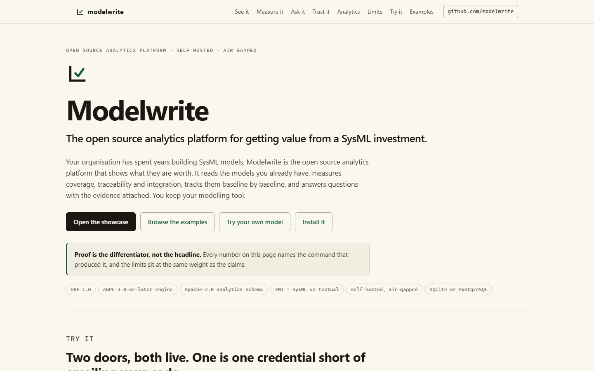
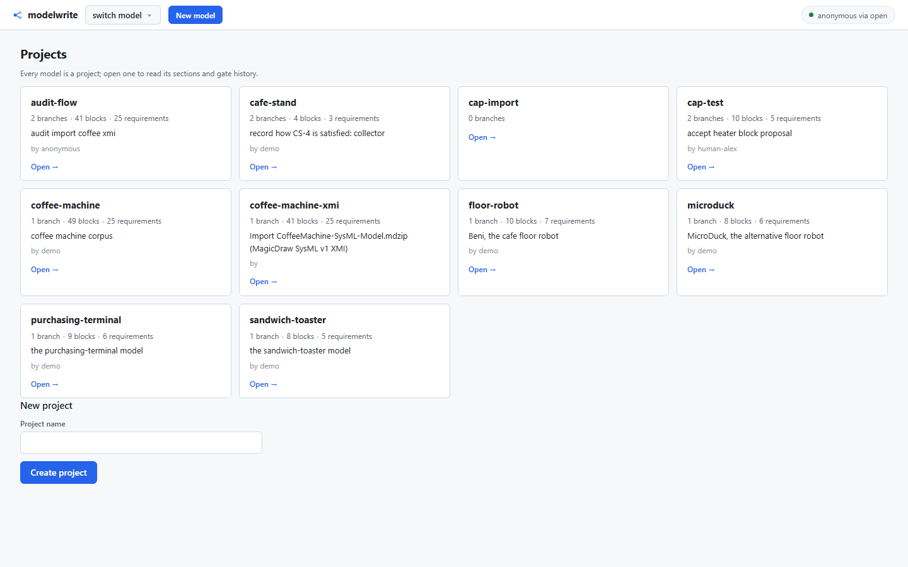
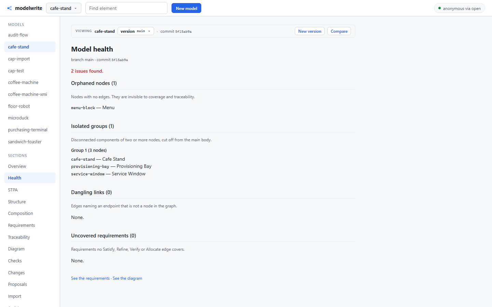
Direction A
Precision instrument
Cool neutral greys, one confident petrol accent, a tight type scale, hairline rules and square corners. A measurement tool, not a document.
Palette
#F5F7F9canvas (page)18.50:1 with #101418#FFFFFFsheet / card18.50:1 with #101418#EDF1F4panel (wells, bars)15.14:1 with #101418#CFD7DEhairline— non-text#101418ink (primary text)18.50:1#49535Cink-2 (secondary)7.85:1#5F6973ink-3 (labels, meta)5.59:1 on #FFFFFF; 4.58:1 on #E4E9EE#0B6E99accent (state, action, link)5.67:1 on #FFFFFF; 4.97:1 on #E6F2F7#075A7Eaccent-deep (hover)7.57:1#E6F2F7accent tint (selected row)4.97:1 with #0B6E99#101418chrome (instrument face)15.67:1 with #E7EDF2#E7EDF2chrome ink15.67:1#9AA5AEchrome muted (nav, meta)7.37:1 on #101418#5CC6DEaccent on dark (nav hover)9.33:1 on #101418#FFFFFFtext on the primary button5.67:1 on #0B6E99
Type
- Interface — system UI sans, 16 px base, 17 px body on the site
system-ui, -apple-system, "Segoe UI", Roboto, Helvetica, Arial, sans-serif- identifiers, ids, hashes, commands
ui-monospace, "SFMono-Regular", "Cascadia Code", Consolas, Menlo, monospace
Rationale
A safety engineer reads a drawing the way a metrologist reads a gauge: the interesting
information is the deviation, and anything that is not a measurement is noise. This direction
gives the page a cold, even ground (#F5F7F9), puts every value on a plain white sheet,
rules the card wall with hairlines instead of shadows, and spends its single accent — a petrol
#0B6E99 — only on state and action. Square corners, a dark graphite instrument face
across the top of both surfaces, and monospace reserved for identifiers make the whole thing read
as a tool rather than a document. It is the direction that best fits a programme where the output
is printed, annotated and signed.
1. Site herothe product capture sits above the fold, in the first screen
Open source analytics platform · self-hosted · air-gapped
Modelwrite
The open source analytics platform for getting value from a SysML investment.
Your organisation has spent years building SysML models. Modelwrite is the open source analytics platform that shows what they are worth. It reads the models you already have, measures coverage, traceability and integration, tracks them baseline by baseline, and answers questions with the evidence attached. You keep your modelling tool.
Open the showcaseBrowse the examplesTry your own modelInstall it
Proof is the differentiator, not the headline. Every number on this page names the command that produced it, and the limits sit at the same weight as the claims.
- OKF 1.0
- AGPL-3.0-or-later engine
- Apache-2.0 analytics schema
- XMI + SysML v2 textual
- self-hosted, air-gapped
- SQLite or PostgreSQL
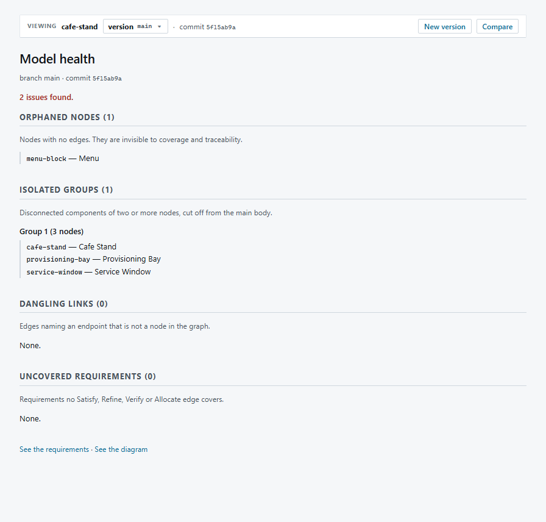
2. “Measure it” sectionthe model-health capture does the arguing
02 / Measure it
Coverage, traceability, integration. The graph gaps lead.
Coverage names which requirements are satisfied, refined, verified or allocated. Traceability names the edges between them. Integration asks whether the model is one connected whole. The graph gaps expose the model nobody can see at a glance.
Orphaned items. A node with no edge. It is present, but nothing connects to it.
Isolated groups. More than one connected component. The model is split.
Dangling links. An edge whose endpoint is missing. The link points at nothing.

3. Workbench — Projectsreal capture, 1440×900
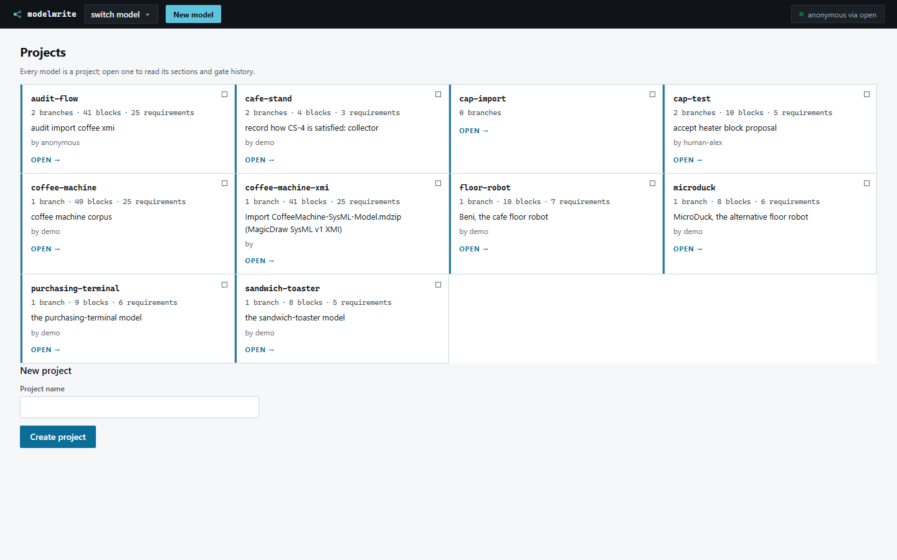
4. Workbench — model healthreal capture, 1440×900
Direction B
Editorial technical
The confidence of a well-set engineering journal: warm paper, a real serif, generous space and rules instead of boxes.
Palette
#F7F2E6canvas (page)15.45:1 with #1A1712#FFFDF7paper (card, plate)17.57:1 with #1A1712#F1EBDDpanel16.21:1 with #1A1712#D9D0BBrule— non-text#1A1712ink (primary text)17.57:1#514A3Dink-2 (secondary, italic meta)8.61:1#5C5546ink-3 (labels)7.34:1#8C2F1Eaccent (rules, links, kicker)8.13:1 on #FFFDF7; 7.40:1 on #F1EBDD#6E2416accent-deep (hover)10.51:1#F7EBE6accent tint7.40:1 with #8C2F1E
Type
- Interface — system serif (Georgia), 17 px base, 18 px body on the site
Georgia, "Iowan Old Style", "Palatino Linotype", "Times New Roman", serif- identifiers, ids, hashes, commands
ui-monospace, "SFMono-Regular", "Cascadia Code", Consolas, Menlo, monospace
Rationale
An engineering journal is a form this audience already trusts: it states a result, shows the plate,
and cites the run. This direction borrows that authority — a warm paper ground
(#FFFDF7), Georgia carrying the headings, rules instead of boxes, an oxblood
#8C2F1E for the rules and links, and the product capture presented as a plate. It is the
most generous of the three and the most persuasive to a manager reading for a decision. It is also
the slowest to scan and the worst fit for the workbench: a serif face and 15 px italic meta text
cost real reading speed in dense tables, traceability matrices and containment trees.
1. Site herothe product capture sits above the fold, in the first screen
Open source analytics platform · self-hosted · air-gapped
Modelwrite
The open source analytics platform for getting value from a SysML investment.
Your organisation has spent years building SysML models. Modelwrite is the open source analytics platform that shows what they are worth. It reads the models you already have, measures coverage, traceability and integration, tracks them baseline by baseline, and answers questions with the evidence attached. You keep your modelling tool.
Open the showcaseBrowse the examplesTry your own modelInstall it
Proof is the differentiator, not the headline. Every number on this page names the command that produced it, and the limits sit at the same weight as the claims.
- OKF 1.0
- AGPL-3.0-or-later engine
- Apache-2.0 analytics schema
- XMI + SysML v2 textual
- self-hosted, air-gapped
- SQLite or PostgreSQL
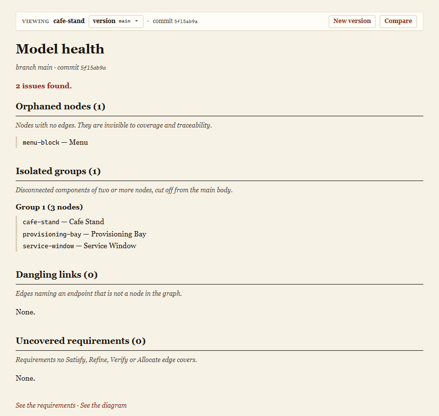
2. “Measure it” sectionthe model-health capture does the arguing
02 / Measure it
Coverage, traceability, integration. The graph gaps lead.
Coverage names which requirements are satisfied, refined, verified or allocated. Traceability names the edges between them. Integration asks whether the model is one connected whole. The graph gaps expose the model nobody can see at a glance.
Orphaned items. A node with no edge. It is present, but nothing connects to it.
Isolated groups. More than one connected component. The model is split.
Dangling links. An edge whose endpoint is missing. The link points at nothing.
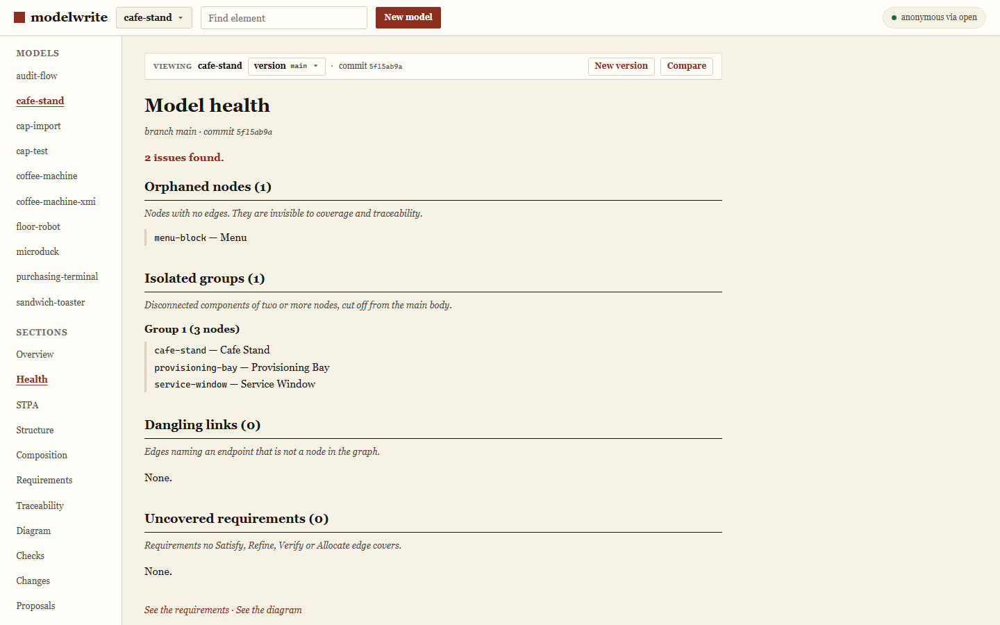
3. Workbench — Projectsreal capture, 1440×900
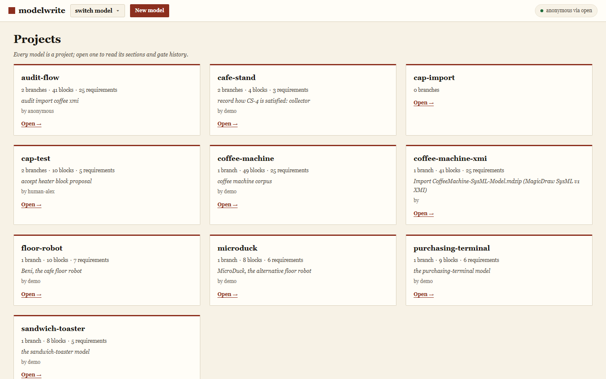
4. Workbench — model healthreal capture, 1440×900
Direction C
Modern product
The craft level of the best developer tools: a near-black canvas, one violet accent, hairline borders, and a single white primary action.
Palette
#0A0B0Dcanvas (page, chrome)17.11:1 with #EDEFF4#14161Bsurface (card)15.73:1 with #EDEFF4#1C1F26panel (wells)13.36:1 with #EDEFF4#282C34hairline— non-text#EDEFF4ink (primary text)17.11:1 on #0A0B0D#A3ABB8ink-2 (secondary)7.82:1 on #14161B; 8.51:1 on #0A0B0D#8B949Eink-3 (labels)6.21:1 on #14161B#8B7CF6accent (link, active)5.92:1 on #0A0B0D; 5.36:1 on #14161B#A99CFFaccent-bright (hover)7.60:1 on #14161B#FFFFFFprimary action surface#0A0B0D on #FFFFFF is 18.50:1
Type
- Interface — system UI sans, 16 px base, generous heading scale
system-ui, -apple-system, "Segoe UI", Roboto, Helvetica, Arial, sans-serif- identifiers, ids, hashes, commands
ui-monospace, "SFMono-Regular", "Cascadia Code", Consolas, Menlo, monospace
Rationale
This is the craft level of the tools the same engineers already use every day — an editor, a CI
dashboard, a terminal. A near-black canvas (#0A0B0D) with one violet accent, 10 px
radii, hairline borders and a single white primary action make the next step unmissable and make
the product capture, not the copy, the loudest thing on the screen. It is the strongest answer to
“we cannot see the product”, and the weakest answer to the two constraints this audience actually
has: a defence programme's review packs are printed and circulated on white paper, and a dark-only
identity is the one that reads as consumer software rather than as part of a programme's tool chain.
1. Site herothe product capture sits above the fold, in the first screen
Open source analytics platform · self-hosted · air-gapped
Modelwrite
The open source analytics platform for getting value from a SysML investment.
Your organisation has spent years building SysML models. Modelwrite is the open source analytics platform that shows what they are worth. It reads the models you already have, measures coverage, traceability and integration, tracks them baseline by baseline, and answers questions with the evidence attached. You keep your modelling tool.
Open the showcaseBrowse the examplesTry your own modelInstall it
Proof is the differentiator, not the headline. Every number on this page names the command that produced it, and the limits sit at the same weight as the claims.
- OKF 1.0
- AGPL-3.0-or-later engine
- Apache-2.0 analytics schema
- XMI + SysML v2 textual
- self-hosted, air-gapped
- SQLite or PostgreSQL
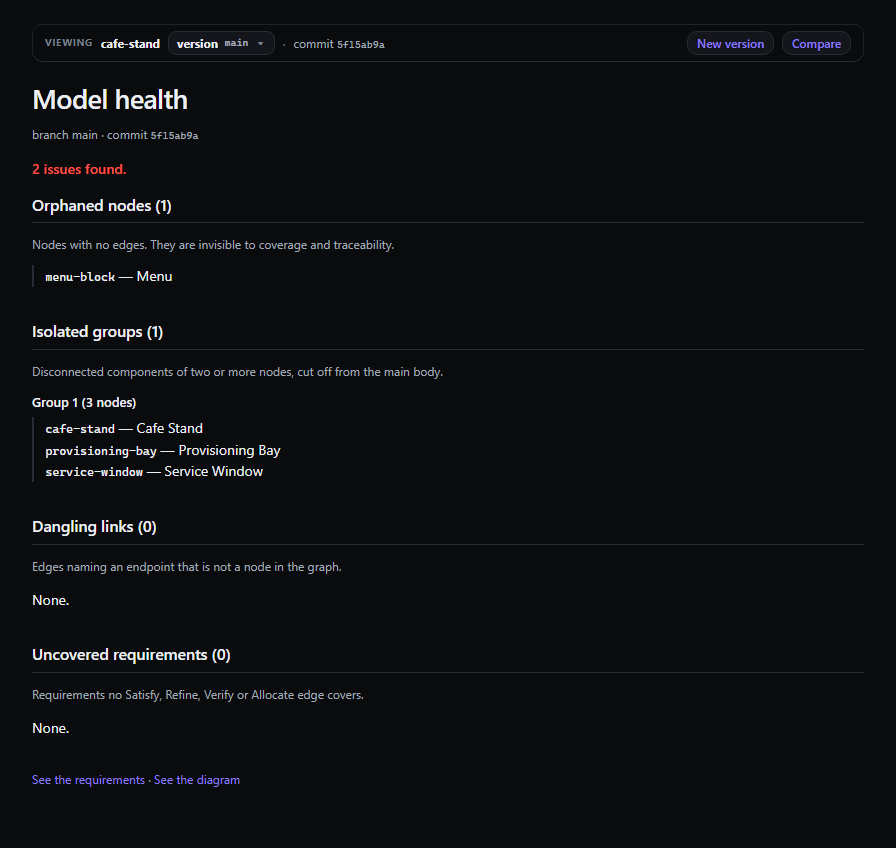
2. “Measure it” sectionthe model-health capture does the arguing
02 / Measure it
Coverage, traceability, integration. The graph gaps lead.
Coverage names which requirements are satisfied, refined, verified or allocated. Traceability names the edges between them. Integration asks whether the model is one connected whole. The graph gaps expose the model nobody can see at a glance.
Orphaned items. A node with no edge. It is present, but nothing connects to it.
Isolated groups. More than one connected component. The model is split.
Dangling links. An edge whose endpoint is missing. The link points at nothing.
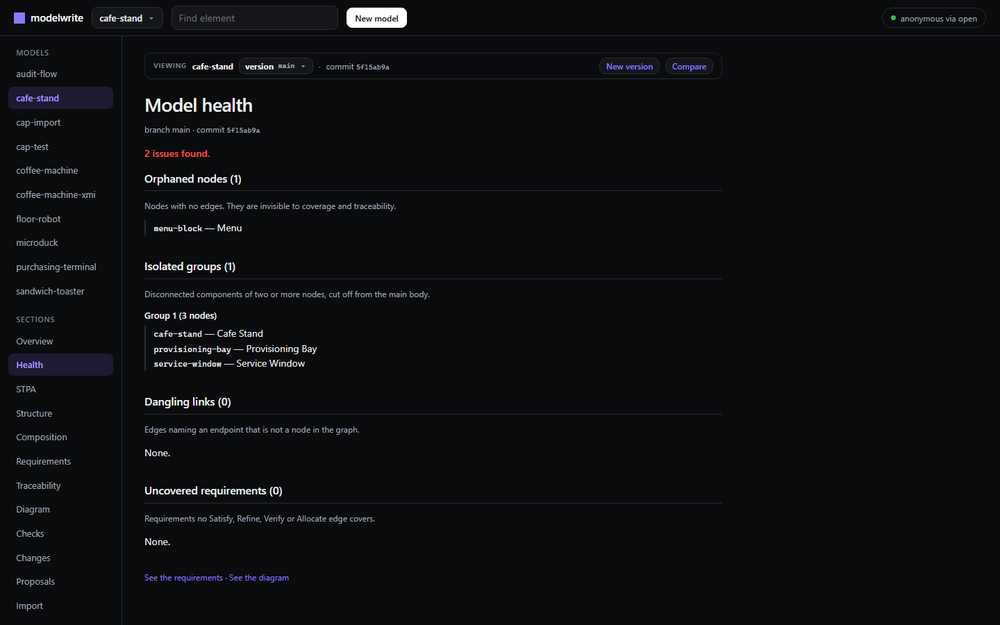
3. Workbench — Projectsreal capture, 1440×900
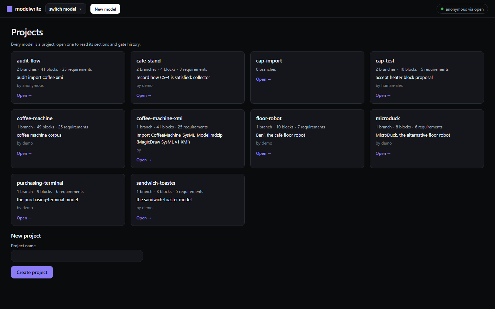
4. Workbench — model healthreal capture, 1440×900
The choice
Direction A was applied to the site and to the workbench
Why A. This audience reads a deviation off a gauge and distrusts anything that looks sold to them, so the surface should behave like an instrument: an even, cold ground, every value on a plain sheet, hairline rules instead of shadows, and one accent spent only on state and action. A is also the only direction that survives all three of the places this product is actually read — a 14-inch screen in a lit office, a printed review pack, and a screenshot pasted into a sign-off pack — and it is the only one of the three whose density fits the workbench's tables and containment trees without a serif face or a 15 px italic slow-scan. B is more beautiful and C is the better answer to “we cannot see the product”, but B costs reading speed in exactly the dense views the product exists for, and C's dark-only canvas is the wrong surface for a defence programme whose artefacts end up on white paper.
What that means in practice. One palette, one type scale, one radius, one
semantic vocabulary — the same hex literals in website/styles.css and in the
workbench stylesheet in server/src/ui/layout.rs, including the graphite instrument
face across the top of both. The accent tints and the pass/fail/warn colours keep their meaning;
the site's green is retired to the pass state only.
| Test | A · Precision instrument | B · Editorial technical | C · Modern product |
|---|---|---|---|
| Signal engineer reading for a defect | strongest — dense, calm, mono ids | solid, but slower to scan | strong, if they live in dark tools |
| Manager reading for a decision | strong — the evidence is the loudest thing | strongest — generous, authoritative | solid, product-forward |
| Printed in a review pack | native | native | poor — inverts to a toner-heavy page |
| Dense tables, trees, matrices | native | costly | good |
| “Show me the product” | good | good | strongest |
| Risk of reading as gloss | lowest | low | highest for this audience |
What was changed, and what was not
- Changed: the palette, the type scale, the masthead (now a graphite instrument face shared by both surfaces), the hero (now two columns with a real capture above the fold), the button (one filled accent primary action), the radius (2 px everywhere), and the workbench's card wall (hairline-ruled grid with a kind mark and an index tab, replacing the floating cards).
- Changed, wording only: the heading “Two doors, both live. One is one credential short of emailing your code.” became “Two doors, both live.” with a body that says what each door gives you and that you sign in with a code we email you. Since then, email delivery was actually built and proven, so even the caveat that followed is gone. No claim, number or limit changed.
- Not changed: every claim, every number, the analytics positioning, the four-beat spine, both trial doors, the generated analytics listing, the FAQ, and the limits section in full — including the sentences that cost the product something. No limit was softened and no marketing language was added.
- Out of scope in the workbench: the CSS layer can give the project card a kind
mark and a ruled grid, but a real per-card health signal (orphans, uncovered requirements) needs a
query in
server/src/ui/pages.rsand a field on the row, which is outside the stylesheet. The direction calls for it; this change does not fake it.